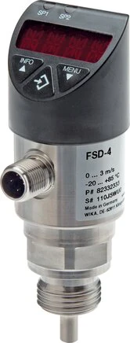

Rất nhiều sự cố hỏng máy đắt tiền bắt nguồn từ một nguyên nhân đơn giản: mất dòng làm mát hoặc bôi trơn mà không ai phát hiện kịp. Đây chính là lúc cảm biến giám sát lưu lượng (electronic flow switch / Durchflusswächter) WIKA dòng Heavy Duty phát huy vai trò — liên tục theo dõi dòng chảy và cảnh báo hoặc khóa liên động ngay khi dòng tụt dưới ngưỡng an toàn. Fast Group Engineering là đại lý cung cấp hàng chính hãng WIKA (Germany) tại Việt Nam.

Gợi ý chọn nhanh
- Cần cảnh báo hoặc điều khiển theo ngưỡng áp/lưu lượng.
- Cần cài setpoint, hysteresis hoặc tín hiệu switching.
- Cần bảo vệ máy nén, thủy lực hoặc mạch làm mát.
- Dải cài đặt, kiểu output và nguồn cấp.
- Kết nối cơ khí, kết nối điện và môi trường lắp.
- Áp/lưu lượng làm việc, chu kỳ đóng cắt và yêu cầu IP.
- Danh mục công tắc áp suất WIKA.
- Bài công tắc áp suất điện tử.
- Bài flow switch làm mát/bôi trơn.
Tóm tắt nhanh
- Flow switch giám sát có/không có dòng chảy (hoặc ngưỡng lưu lượng) và báo/ngắt khi bất thường.
- Bảo vệ hệ thống làm mát, bôi trơn, tuần hoàn khỏi chạy khô.
- Nguyên lý phổ biến: calorimetric (nhiệt) — không có bộ phận cơ khí chuyển động.
- Output PNP/NPN, một số bản có analog và hiển thị số.

Nguyên lý calorimetric hoạt động thế nào?
Đầu dò của flow switch được sấy nhẹ đến nhiệt độ cao hơn môi chất một chút. Khi có dòng chảy, môi chất đi qua sẽ mang nhiệt khỏi đầu dò; dòng càng mạnh, nhiệt bị lấy đi càng nhiều. Cảm biến đo mức chênh lệch nhiệt này và quy ra tốc độ dòng. Vì không có cánh quạt, piston hay lò xo chuyển động, thiết bị ít mài mòn, ít kẹt cặn và gần như không cần bảo trì cơ khí — rất phù hợp cho môi trường công nghiệp nặng, nơi các loại flow switch cơ khí dễ hỏng.
Vì sao cần giám sát lưu lượng?
| Rủi ro khi mất dòng | Hậu quả |
|---|---|
| Mất nước làm mát | Quá nhiệt, hỏng thiết bị |
| Mất dầu bôi trơn | Mài mòn, kẹt cơ khí |
| Bơm chạy khô | Hỏng bơm |
| Tắc/rò rỉ đường ống | Dừng quá trình |
Flow switch phát hiện sớm và kích cảnh báo hoặc khóa liên động (interlock) — ví dụ tự động dừng máy phát laser khi dòng nước làm mát tụt, tránh cháy nguồn quang học đắt tiền.
Ứng dụng interlock điển hình
Trong thực tế, ngõ ra PNP/NPN của flow switch thường được đưa vào PLC hoặc mạch điều khiển để tạo liên động: khi dòng dưới ngưỡng, tín hiệu chuyển trạng thái và hệ thống dừng thiết bị được bảo vệ đồng thời phát cảnh báo. Cách bố trí này biến flow switch thành một "cầu chì an toàn" cho dòng chảy — rẻ hơn rất nhiều so với chi phí sửa chữa khi máy chạy khô.
Ứng dụng theo ngành
- Vòng làm mát máy công cụ, khuôn, laser, máy hàn.
- Bôi trơn hộp số, ổ trục, bơm.
- Giám sát tuần hoàn trong hệ thống nhiệt, HVAC.
- Bảo vệ bơm khỏi chạy khô trong trạm cấp nước.
Lưu ý khi lắp đặt
Để đo tin cậy, nên lắp flow switch ở đoạn ống có dòng chảy ổn định, chừa đủ đoạn ống thẳng trước và sau đầu dò theo hướng dẫn (thường vài lần đường kính ống) để tránh nhiễu loạn dòng. Đầu dò phải ngập hoàn toàn trong môi chất và định hướng đúng chiều dòng. Tránh lắp ngay sau van, co cút hoặc điểm thay đổi tiết diện đột ngột vì dòng xoáy sẽ làm sai lệch phép đo.
Cách chọn (Checklist)
- [ ] Loại môi chất: nước, dầu, dung dịch làm mát.
- [ ] Dải lưu lượng/tốc độ dòng cần giám sát.
- [ ] Kích thước & kết nối đường ống (ren G, lắp T-piece).
- [ ] Output: PNP/NPN, có analog/hiển thị không.
- [ ] Nhiệt độ & áp suất môi chất.
- [ ] Vật liệu wetted & cấp bảo vệ IP.
Flow switch hay flow meter?
| Tiêu chí | Flow switch | Flow meter |
|---|---|---|
| Mục đích | Báo ngưỡng có/không dòng | Đo giá trị lưu lượng chính xác |
| Output | Đóng/ngắt (± analog) | Giá trị đo |
| Chi phí | Thấp hơn | Cao hơn |
| Dùng khi | Bảo vệ/interlock | Cần số liệu định lượng |
Nếu bạn chỉ cần biết "dòng có chảy đủ hay không" để bảo vệ thiết bị, flow switch là lựa chọn kinh tế. Khi cần số liệu lưu lượng để tính toán hay lập báo cáo, mới cần đến flow meter.
Ưu điểm so với flow switch cơ khí truyền thống
Các flow switch cơ khí kiểu cánh gạt (paddle) hay piston dựa vào lực dòng chảy đẩy một chi tiết cơ khí để đóng/ngắt tiếp điểm. Chúng rẻ nhưng có nhược điểm cố hữu: chi tiết chuyển động dễ mài mòn, kẹt cặn, gãy cánh gạt khi dòng xung, và tiếp điểm cơ khí xuống cấp theo thời gian. Loại calorimetric điện tử của WIKA khắc phục toàn bộ những điểm này vì không có bộ phận chuyển động, đồng thời cho ngõ ra điện tử dễ tích hợp vào PLC và cho phép chỉnh ngưỡng linh hoạt. Trong các dây chuyền chạy liên tục, độ bền và độ tin cậy cao hơn thường bù lại phần chênh lệch chi phí ban đầu chỉ sau một lần tránh được sự cố dừng máy.
Hiểu về ngõ ra PNP/NPN
Ngõ ra số của flow switch thường ở dạng PNP hoặc NPN — hai kiểu transistor chuyển mạch khác nhau về cách nối tải. Kiểu PNP (phổ biến ở châu Âu và với WIKA) cấp mức dương khi kích hoạt, còn NPN nối về mát. Điều quan trọng khi chọn là ngõ ra phải tương thích với đầu vào số của PLC trong tủ điều khiển của bạn. Nếu không chắc PLC dùng kiểu nào, hãy nêu model PLC khi hỏi giá để chúng tôi tư vấn cấu hình phù hợp, tránh phải thêm rơ-le trung gian.
Ví dụ thực tế: bảo vệ máy cắt laser
Một máy cắt laser công suất lớn cần dòng nước làm mát liên tục cho đầu phát và gương quang học. Chỉ cần bơm yếu đi hoặc đường ống bị tắc vài phút, nhiệt tích tụ có thể làm hỏng linh kiện trị giá hàng trăm triệu đồng. Giải pháp là lắp một flow switch calorimetric ngay trên đường nước làm mát, cài ngưỡng ở mức lưu lượng tối thiểu an toàn. Khi dòng tụt dưới ngưỡng, ngõ ra của flow switch báo về PLC để lập tức dừng phát laser và bật cảnh báo. Chi phí cho một cảm biến như vậy là rất nhỏ so với thiệt hại mà nó ngăn chặn — đó là lý do giám sát lưu lượng gần như bắt buộc trong các thiết bị nhạy nhiệt.
Cảm biến kết hợp lưu lượng và nhiệt độ
Trong nhiều vòng làm mát, việc mất dòng thường đi kèm tăng nhiệt. Một số model WIKA có thể giám sát đồng thời lưu lượng và nhiệt độ trong cùng một đầu dò, cho phép bạn đặt hai lớp bảo vệ mà chỉ cần một điểm lắp. Nếu ứng dụng của bạn cần cả hai thông tin này, hãy nêu rõ khi hỏi giá để chúng tôi đề xuất bản tích hợp phù hợp.
Câu hỏi thường gặp
Flow switch calorimetric có cần bảo trì nhiều không?
Ít, vì không có bộ phận chuyển động; chỉ cần vệ sinh đầu dò định kỳ để tránh bám cặn ảnh hưởng đo nhiệt.
Có đo được cả nhiệt độ không?
Một số model kết hợp giám sát cả nhiệt độ; chúng tôi tư vấn theo nhu cầu cụ thể.
Lắp ở vị trí nào là tốt nhất?
Nơi dòng ổn định, đủ đoạn ống thẳng theo hướng dẫn, đầu dò ngập hoàn toàn trong môi chất.
Cần tư vấn hoặc báo giá flow switch WIKA?
Gửi môi chất, kích thước ống, ngưỡng dòng và loại output để nhận báo giá trong 24h.
- Email: minhduc@fastgroup.vn · Zalo: (+84) 938 888 958
Fast Group Engineering – đại lý cung cấp hàng chính hãng WIKA (Germany) tại Việt Nam.
Bài liên quan: [Công tắc áp suất điện tử Heavy Duty] · [Cảm biến áp suất WIKA 4–20 mA] · [Bộ hiển thị 4–20 mA gắn tủ]